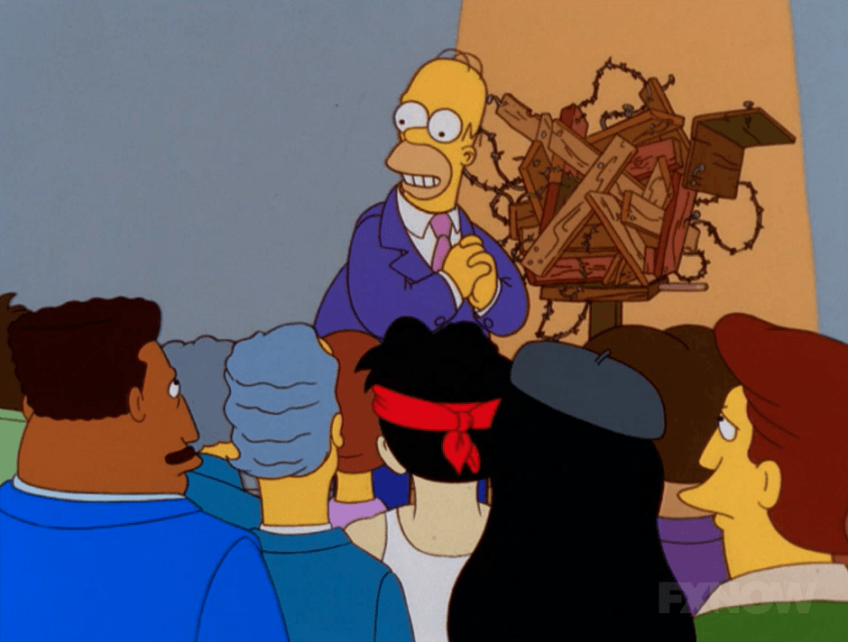

Dissemination

"Dice che molte volte dovrei stare zitto
perché parlo senza aver sudato.
E le altre volte dovrei stare zitto
perché parlo senza aver studiato."
La mia donna dice che - D. D’Amico - Translation
Talks and Posters
A visual summary obtained with the great semnar package.
Invited Talks
SISBayes 2025
Talk: Bnp4bnp: Bayesian Nonparametric Models For Biomarkers And Neuronal Patterns
Padua, IT - September 2025 -
BNP 14
Talk: Bnp4bnp: Bayesian Nonparametric Models For Biomarkers And Neuronal Patterns
Los Angeles, US - June 2025 -Early-Career Workshop on Nonparametric Statistics
Talk: Bayesian nonparametric models for biomarkers and neuronal patterns
Rome, IT - May 2025 -Frontiers of Bayesian Inference and Data Science
Talk: Of mice and music: finite-infinite nested priors for the segmentation of large-scale grouped data
Oaxaca, MX - September 2024 -ISBA Satellite workshop to ISBA World Meeting
Talk: Segmenting brain imaging mass spectrometry data under separate exchangeability
Lugano, CH - June 2024 -CFE-CMStatistics 2023
Virtual talk: Bayesian models and computational methods for complex biological and environmental datasets
Berlin, DE - December 2023 -CFE-CMStatistics 2022 (Ercim)
Virtual talk: Multiple hypothesis screening via mixtures of non-local distributions with applications to genomic datasets
London, UK - December 2022 -ISBA World Meeting 2022
j-ISBA session talk: Bayesian screening via mixtures of shrinkage priors with applications to light-sheet fluorescence microscopy in brain imaging
Montreal, CA - June 2022 -SIS 2022
Talk: Clustering artists based on the energy distributions of their songs on Spotify via the Common Atoms Model
Caserta, IT - June 2022 -EcoSta 2021
Virtual talk: Horseshoe Pit – A Unified Framework for Large-Scale Bayesian Inference
Virtual Conference - June 2021-
Invited Seminars
DAIS Seminar Series
Seminar (45 min): BNP4BNP: Bayesian Nonparametric Models for Biomarkers and Neuronal Patterns
Mestre, IT - November 2024 -UniPD Welcome Seminar
Seminar (45 min): Of mice and music: finite-infinite nested priors for the segmentation of large-scale grouped data
Padova, IT - November 2024 -CSUEB ASA Student Chapter
Virtual seminar (1 hour): Bayesian nonparametric mixtures for novelty detection
Hayward (California), US - October 2022 -Cattolica - Spring 22 Seminar Series
Seminar (1 hour): Bayesian nonparametric mixtures for novelty detection and partially exchangeable data
Statistics Department Seminar - April 2022 -UCI - Fall 2020 Seminar Series
Virtual Seminar (45 min): Bayesian Sparse Regression via Cluster Shrinkage Parameters
Statistics Department Seminar - November 2020 -
Contributed Talks
BAYSM 2023
Talk: Segmenting MALDI-MSI brain imaging mass spectrometry data under separate exchangeability
Virtual Conference - November 2023 -SIS 2023
Talk with Poster: Bayesian analysis of Amazon’s best-selling books via finite nested mixture models
Ancona, IT - June 2023 -SIS 2022
Talk: A tool to validate the assumptions on ratios of nearest neighbors’ distances: the Consecutive Ratio Paths
Caserta, IT - June 2022 -Joint Statistical Meeting 2021
Virtual Talk: Detecting Brain Activation via Bayesian Mixture of Horseshoe Distributions
Virtual Conference - August 2021 -ISBA World Meeting 2021
Virtual Talk: Bayesian Variable Selection via Mixture of Horseshoe Distributions
Virtual Conference - June 2021 -Bayes Comp 2020
Talk: Bayesian nonparametric dimensionality reduction via estimation of data intrinsic dimensions
Florida, US - January 2020 -12th IBS-Italian Region conference
Contributed Talk: Modeling Human Microbiome Data via Latent Nested Nonparametric Priors
Naples, IT - July 2019 -
Posters
ISBA 2024 World Meeting
Poster: Finite-infinite nested priors for the segmentation of complex, large-scale grouped datasets
Venice, IT - July 2024 -Models and Learning for Clustering and Classification
Video Poster: Bayesian Nonparametric Functional Novelty Detector
Virtual Conference - September 2020 -Young-ISA Twitter Poster Conference (#YISAPoster2020)
Virtual Poster: A Two-Stage Bayesian Nonparametric Model for Novelty Detection with Robust Prior Information
Twitter - July 2020 -BNP19 - Bayesian Nonparametrics
Poster: Modeling Human Microbiome Data via Latent Nested Nonparametric Priors
Oxford, UK - June 2019 -
Other Conferences and Workshops
Uncertainty, Bayes and Statistics - A meeting in honor of Guido Consonni
Milan, IT - July 2024 -Statalk 2023
Rome, IT - September 2023 -Bayesian Nonparametrics for Complex Data
Padua, IT - January 2020 -Network Models in Statistics, Economics and Social Sciences
Milan, IT - November 2019 -Statistical Methods in Imaging - SMI 2019
Irvine, US - June 2019 -FoMICS-DADSi Summer School on Data Assimilation
Lugano, CH - September 2018 -LMS Invited Lecture Series and CRISM Summer School in Computational Statistics 2018
Warwick, UK -July 2018 -ISBA World Meeting 2018
Edinburgh, UK - June 2018 -